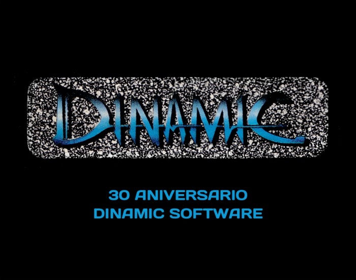
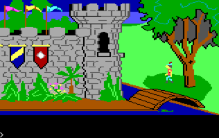

>
Mientras en el resto del mundo los videojuegos sufrían una crisis, el año 1984 fue un hito dentro de la historia del videojuego en España, ya que fue el año en que aparecieron las primeras empresas españolas dedicadas al software de entretenimiento, convirtiendo este año en el primero de lo que se ha llegado a conocer como la "Edad de Oro del Videojuego Español".
<

>
Este año aparece Dinamic Software (Dinamic Multimedia a partir de 1993) con juegos como Yenght y Artist; y también Erbe, que se dedicará principalmente a la distribución de videojuegos durante esta década.
<

>
Durante este año sale a la venta la que se considera la primera aventura gráfica
de la historia: King Quest I: Quest for the Crown desarrollada por Sierra Online.
El juego fue toda una revolución y detrás de su desarrollo hubo un trabajo
de más de 18 meses y un presupuesto de más de setecientos mil dólares.
<